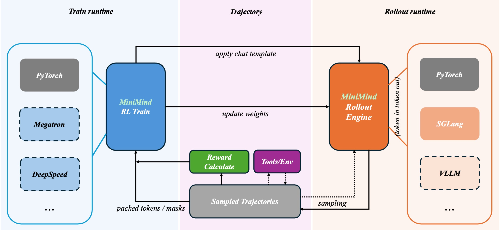
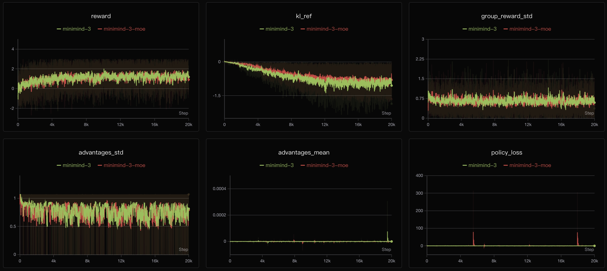
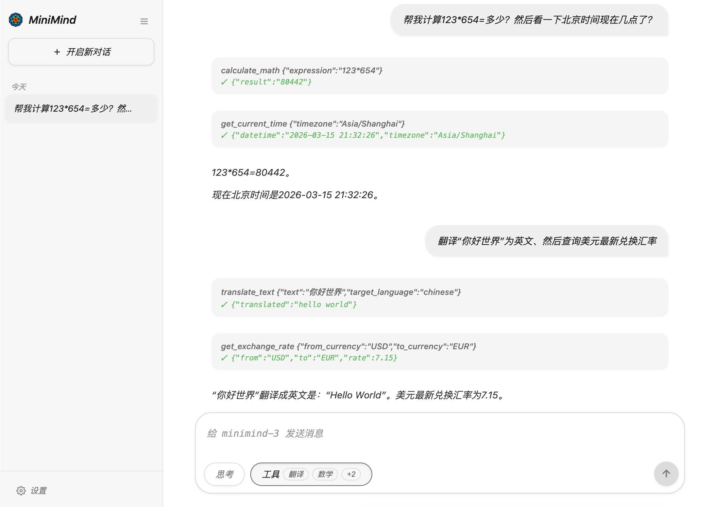

第 15 章 · 训练
Agentic RL 智能体强化学习
前 14 章的模型只会“一次说完”。智能体要会多轮行动：调用工具、看结果、再决定下一步。这一章把强化学习从“单轮回答”扩展到“整条轨迹”。
1. 奖励不只来自答案
R(τ) = R_answer + R_tool + R_format − R_unfinished
│ │ │ └ 没给出最终答案要扣分
│ │ └ 格式错误要扣分
│ └ 工具调用是否合法、是否有用
└ 最终答案对不对（可能延迟到最后才结算）与 GRPO 的区别：GRPO 优化一条回答，Agentic RL 优化一整条轨迹—— 包括“想 → 调工具 → 看结果 → 再想 → 答”的每一步。
2. 动画：一条轨迹与它的奖励
看模型如何一步步完成一个需要工具的数学题，以及每个环节贡献了多少奖励。
动画多轮工具调用轨迹
🔑 延迟奖励（delayed reward）
调工具这一动作本身可能没有对错，它的价值取决于最终能不能解出题。
所以奖励要等到轨迹结束才结算，再沿着整条轨迹回传——这就是“延迟”。
3. 训练管线：rollout 与 train 解耦

while True:
batch = rollout_engine.generate(prompts) # ① 用当前策略采样轨迹
rewards = compute_rewards(batch) # ② 按规则 / 环境算奖励
advantages = normalize(rewards) # ③ 组内归一化
policy_update(batch, advantages) # ④ GRPO/CISPO 更新策略

✅ 动手提示
Notebook 里先带你练 json.loads/dumps 解析工具调用、
re 提取 <tool_call> 标签、正则校验答案，
再留白让你实现 compute_reward 与一个简化的单轮 grpo_step。
真实的多轮 rollout 需要环境交互，先用“离线轨迹 + 规则奖励”把逻辑跑通。
4. 结语：你已经走完了整条链路
从分词到预训练，从 SFT 到 LoRA / 蒸馏 / DPO / RL，再到智能体—— 这就是一个现代大语言模型的完整生命周期。MiniMind 把它压缩到 64M 参数、几小时训练， 为的就是让你能真正把它跑一遍、改一遍、懂一遍。
📌 下一步建议
把 15 章的 Notebook 里的留白全部自己写一遍；然后对照官方 model_minimind.py 逐行 diff；
最后试着改一个超参（层数、head 数、词表大小）重新训练，观察 loss 和生成质量的变化。